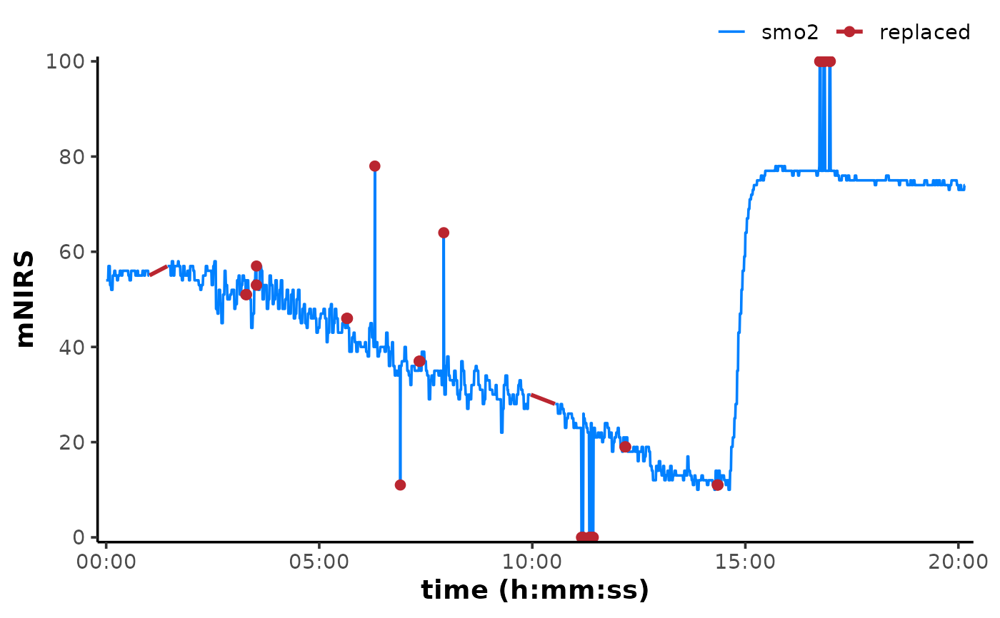

replace_mnirs() detects and removes local outliers and specified invalid
values in nirs_channels within an "mnirs" data frame, and replaces
missing NA values via interpolation methods.
replace_invalid() detects specified invalid values or cutoff values in
vector data and replaces them with the local median value or NA.
replace_outliers() detects local outliers in vector data with a Hampel
filter and replaces with the local median value or NA.
replace_missing() detects missing values in vector data and replaces
via interpolation methods.
Usage
replace_mnirs(
data,
nirs_channels = NULL,
time_channel = NULL,
invalid_values = NULL,
invalid_above = NULL,
invalid_below = NULL,
outlier_cutoff = NULL,
width = NULL,
span = NULL,
method = c("linear", "median", "locf", "none"),
verbose = TRUE
)
replace_invalid(
x,
t = seq_along(x),
invalid_values = NULL,
invalid_above = NULL,
invalid_below = NULL,
width = NULL,
span = NULL,
method = c("median", "none"),
bypass_checks = FALSE,
verbose = TRUE
)
replace_outliers(
x,
t = seq_along(x),
outlier_cutoff = 3L,
width = NULL,
span = NULL,
method = c("median", "none"),
bypass_checks = FALSE,
verbose = TRUE
)
replace_missing(
x,
t = seq_along(x),
width = NULL,
span = NULL,
method = c("linear", "median", "locf"),
bypass_checks = FALSE,
verbose = TRUE,
...
)Arguments
- data
A data frame of class "mnirs" containing time series data and metadata.
- nirs_channels
A character vector of mNIRS channel names to operate on. Must match column names in
dataexactly. Retrieved from metadata if not defined explicitly.- time_channel
A character string indicating the time or sample channel name. Must match column names in
dataexactly. Retrieved from metadata if not defined explicitly.- invalid_values
A numeric vector of invalid values to be replaced, e.g.
invalid_values = c(0, 100, 102.3). The defaultNULLwill not replace invalid values.- invalid_above, invalid_below
Numeric values each specifying cutoff values, above or below which (respectively) will be replaced, inclusive of the specified cutoff values.
- outlier_cutoff
An integer for the local outlier threshold, as number of standard deviations above and below the local median. The default
outlier_cutoff = NULLwill not replace outliers.outlier_cutoff = 3is the standard replacement threshold following Pearson's rule.- width
An integer defining the local window in number of samples around
idxin which to perform the operation., between[idx - floor(width/2), idx + floor(width/2)].- span
A numeric value defining the local window timespan around
idxin which to perform the operation. In units oftime_channelort, between[t - span/2, t + span/2].- method
A character string indicating how to handle replacement (see Details for more on each method):
"linear"Replaces
NAs via linear interpolation (the default) usingstats::approx()."median"Replaces
NAs with the local median of valid values within a centred window defined by eitherwidthorspan."locf"("Last observation carried forward"). Replaces
NAs with the most recent valid non-NAvalue to the left for trailingNAs or to the right for leadingNAs, usingstats::approx()."none"Returns
NAs without replacement.
- verbose
A logical to display (the default) or silence (
FALSE) warnings and information messages used for troubleshooting.- x
A numeric vector of the response variable.
- t
An optional numeric vector of the predictor variable; time or sample number. Defaults to indices of
t = seq_along(x).- bypass_checks
A logical allowing wrapper functions to bypass redundant checks and validations.
- ...
Additional arguments.
Value
replace_mnirs() returns a tibble of class
"mnirs" with metadata available with attributes().
Vectorised replace_*() return a numeric vector the same length as x.
Details
replace_mnirs() is a wrapper function expanding the vectorised replace_*
functions to operate on a data frame.
nirs_channels and time_channel can be retrieved automatically from
data of class "mnirs" which has been processed with {mnirs},
if not defined explicitly.
Channels (columns) in data not explicitly defined in nirs_channels
will be passed through untouched to the output data frame.
replace_outliers and replace_missing when method = "median" require
defining a local rolling window in which to perform outlier detection and
median interpolation. This window can be specified by either width as
the number of samples centred on idx between
[idx - floor(width/2), idx + floor(width/2)], or span as the timespan
in units of time_channel centred on idx between
[t - span/2, t + span/2]. Specifying width is often faster than
span. A partial moving average will be calculated at the edges of the
data.
replace_invalid() can be used to remove known invalid values in
exported data.
Specific
invalid_valuescan be replaced, such asc(0, 100, 102.3). Data ranges can be replaced with cutoff values specified byinvalid_aboveandinvalid_below, where any values higher or lower than the specified cutoff values (respectively) will be replaced, inclusive of the cutoff values themselves.
replace_outliers() will compute rolling local median values across x,
defined by either width number of samples, or span timespan in units
of t. Specifying width is often faster than span.
Outliers are detected with robust median absolute deviation (MAD) method adapted from
pracma::hampel(). Outliers equal to or less than the smallest absolute time series difference inxwill be excluded, to avoid detecting negligible differences as outliers where local data have minimal or zero variation.Values of
xoutside local bounds defined byoutlier_cutoffare identified as local outliers and either removed ifmethod = "none", or replaced with the local median value (method = "median", the default).This function will NOT replace
NAvalues already existing in thex. They will be passed along in the returned vector. Seereplace_missing().A high
outlier_cutoffthreshold makes the Hampel filter more forgiving. A lowoutlier_cutoffwill declare more points to be outliers.outlier_cutoff = 3corresponds to Pearson's 3 sigma edit rule.outlier_cutoff = 0corresponds to Tukey's median filter.
replace_missing() will interpolate across missing values (NAs) as
specified by method.
Leading and trailing
NAs are replaced by "nocb" ("next observation carried backward") and "locf", respectively, for bothmethod ="linear"and"locf", by applyingrule = 2(seestats::approx()).method = "median"will calculate the local median of valid (non-NA) values to either side ofNAs within a window defined bywidthnumber of samples, or a timespan defined byspanin units oft(time). Such that sequentialNAs will all be replaced by the same median value.If there are no valid values within
spanto one side of theNAvalue(s), it will be replaced with the median of the other side (i.e. for leading and trailingNAs). If there are no valid values within either side ofspan, the first valid sample on either side will be used (i.e. equivalent toreplace_missing(x, width = 1)).
See also
pracma::hampel(), stats::approx()
Examples
## vectorised operation
x <- c(1, 999, 3, 4, 999, 6)
replace_invalid(x, invalid_values = 999, width = 2, method = "median")
#> [1] 1 3 3 4 6 6
(x_na <- replace_outliers(x, outlier_cutoff = 3, width = 2, method = "none"))
#> [1] 1 999 3 4 999 6
replace_missing(x_na, method = "linear")
#> [1] 1 999 3 4 999 6
## read example data
data <- read_mnirs(
file_path = example_mnirs("moxy_ramp"),
nirs_channels = c(smo2 = "SmO2 Live"),
time_channel = c(time = "hh:mm:ss"),
verbose = FALSE
)
## clean data
data_clean <- replace_mnirs(
data,
nirs_channels = NULL, ## nirs_channels will be retrieved from metadata
time_channel = NULL, ## retrieved from metadata
invalid_values = 0, ## known invalid values in the data
invalid_above = 90, ## remove data spikes
outlier_cutoff = 3, ## recommended default value
width = 10, ## window to detect local outliers
method = "linear", ## linear interpolation over `NA`s
verbose = FALSE
)
library(ggplot2)
## plot original and and show where values have been replaced
plot(data, label_time = TRUE) +
scale_colour_manual(
name = NULL,
breaks = c("smo2", "replaced"),
values = palette_mnirs(2)
) +
geom_point(
data = data[data_clean$smo2 != data$smo2, ],
aes(y = smo2, colour = "replaced"), na.rm = TRUE
) +
geom_line(
data = {
data_clean[!is.na(data$smo2), "smo2"] <- NA
data_clean
},
aes(y = smo2, colour = "replaced"), linewidth = 1, na.rm = TRUE
)
#> Scale for colour is already present.
#> Adding another scale for colour, which will replace the existing scale.
